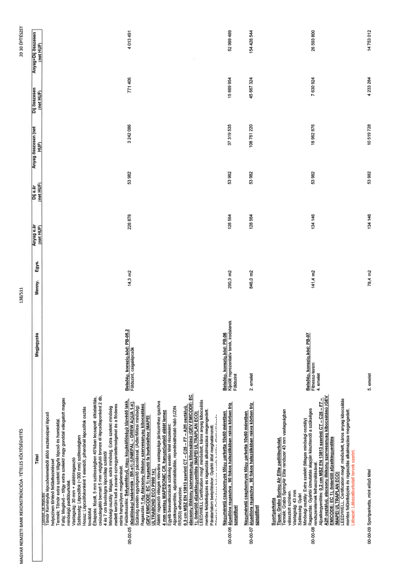

| Tétel | Megjegyzés | Menny. | Egys. | Anyag e.ár (net HUF) | Díj e.ár (net HUF) | Anyag összesen (net HUF) | Díj összesen (net HUF) | Anyag+Díj összesen (net HUF) |
|---|---|---|---|---|---|---|---|---|
| Tömör keményfa lépcsőelemekből álló asztalosipari lépcső helyszínen történő felületkezeléssel Termék: Tömör extra szelekt tölgyfa lépcső és homloklap. Fafaj: Meglévő – tölgy extra szelekt/ nagy gonddal válogatott magas minőségű padlóburkolat. Vastagság: 30 mm + alátét/ragasztó Szélesség: Lépcsőfok (-300 mm) szélességben Hossz: Lépcsőfokonként 1 elemből, pihenőnél lépcsőfok osztás 4 és 7 cm távolságra lépcsőlap szélétől Élképzés: fózolt, 5 mm szélességben 45%ban lecsapott élkialakítás, csúszásgátló bemart 5 mm végigfutó bronz él lépcsőlaponként 2 db, 4 és 7 cm távolságra lépcsőlap szélétől Minőségi osztály: Magas, extra minőség. Extra szelekt minőség mellett kerülni kell a zavaró színegyenetlenségeket és a flóderes minta hangsúlyos megjelenését. Felületkezelés: Selyemfényű, nagy kopásállóságú tűzvédő lakk. (tűzállósági határérték: Bfl-s1) UNIEPAL – DREW AQUA 1-K!. Szükség esetén egységesítő pácolással. (Adler/Milesi minőség) Ragasztás: 1 rtg Alacsony illékony szervesanyag kibocsátású (GEV EMICODE: EC 1) ragasztó fa burkolathoz (MAPEI ULTRABOND ECO P990 1K) Alátét/ ragasztó rétegek releváns vastagsága járószinthez igazítva 4 mm vastag MAPESONIC CR, hangszigetelő alátét lemez Egyéb beavatkozások szükség esetén tétel részeként: Aljzatkiegyenlítés, aljzatstabilizálás, repedésháló háló (UZIN RR203) elhelyezése. LEED/WELL Certification megf. minősített, káros anyag kibocsátás mentes felületképzés és ragasztás alkalmazása megengedett. Páratartalom beépítéskor: Gyártó által meghatározott. | Belsőép. konszig.kód: PB-05.2 Földszint, csigalépcsők | 14,3 | m2 | 226 878 | 53 982 | 3 242 086 | 771 406 | 4 013 491 |
| 00-00-05 Felületkezelés: Selyemfényű, nagy kopásállóságú tűzvédő lakk. (tűzállósági határérték: Bfl-s1) UNIEPAL – DREW AQUA 1-K!. Szükség esetén egységesítő pácolással. (Adler/Milesi minőség) Ragasztás: 1 rtg Alacsony illékony szervesanyag kibocsátású (GEV EMICODE: EC 1) ragasztó fa burkolathoz (MAPEI ULTRABOND ECO P990 1K) Alátét/ ragasztó rétegek releváns vastagsága járószinthez igazítva 4 mm vastag MAPESONIC CR, hangszigetelő alátét lemez Egyéb beavatkozások szükség esetén tétel részeként: Aljzatkiegyenlítés, aljzatstabilizálás, repedésháló háló (UZIN RR203) elhelyezése. LEED/WELL Certification megf. minősített, káros anyag kibocsátás mentes felületképzés és ragasztás alkalmazása megengedett. | NaN | NaN | NaN | 0 | 0 | 0 | 0 | 0 |
| 00-00-06 Nagyméretű csaphornyos tölgy parketta 10x60 méretben álpallóra ragasztva, 90 fokos halszálkában rakva körben fríz szegéllyel | Belsőép. konszig.kód: PB-06 Kijelölt reprezentatív terek, irodaterek Földszint | 290,3 | m2 | 128 564 | 53 982 | 37 319 535 | 15 669 954 | 52 989 489 |
| 00-00-07 Nagyméretű csaphornyos tölgy parketta 10x60 méretben álpallóra ragasztva, 90 fokos halszálkában rakva körben fríz szegéllyel | 2. emelet | 846,0 | m2 | 128 564 | 53 982 | 108 761 220 | 45 667 324 | 154 428 544 |
| 00-00-08 Sportparketta Típus: Grabo Spring Air Elite padlóburkolat. Termék: Grabo SpringAir Elite rendszer 43 mm vastagságban választott színben. Vastagság: 43 mm Szélesség: Gyári Minőségi osztály: Extra szelekt (Magas minőségű osztály) Ragasztás: Gyártói útmutatás alapján készítendő a szükséges rendszerelemek felhasználásával. Aljzatkiegyenlítés: 0,2 cm MSZ EN 13813 szerinti CT – C25 – F7 – A2fl osztályú, alacsony illékony szervesanyag kibocsátású (GEV EMICODE: EC 1), önterülő aljzatkiegyenlítés (MAPEI ULTRAPLAN ECO) LEED/WELL Certification megf. minősített, káros anyag kibocsátás mentes felületképzés és ragasztás alkalmazása megengedett. Lábazat: Lábazatburkolati tervek szerint. | Belsőép. konszig.kód: PB-07 Fitness-terem 4. emelet | 141,4 | m2 | 134 146 | 53 982 | 18 962 876 | 7 630 924 | 26 593 800 |
| 00-00-09 Sportparketta, mint előző tétel | 5. emelet | 78,4 | m2 | 134 146 | 53 982 | 10 519 728 | 4 233 284 | 14 753 012 |
